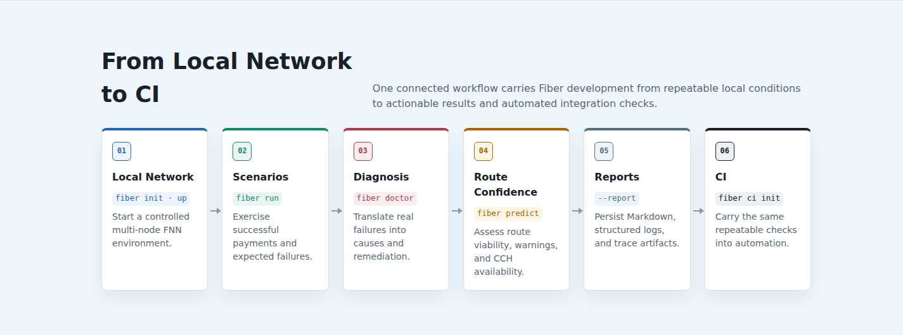
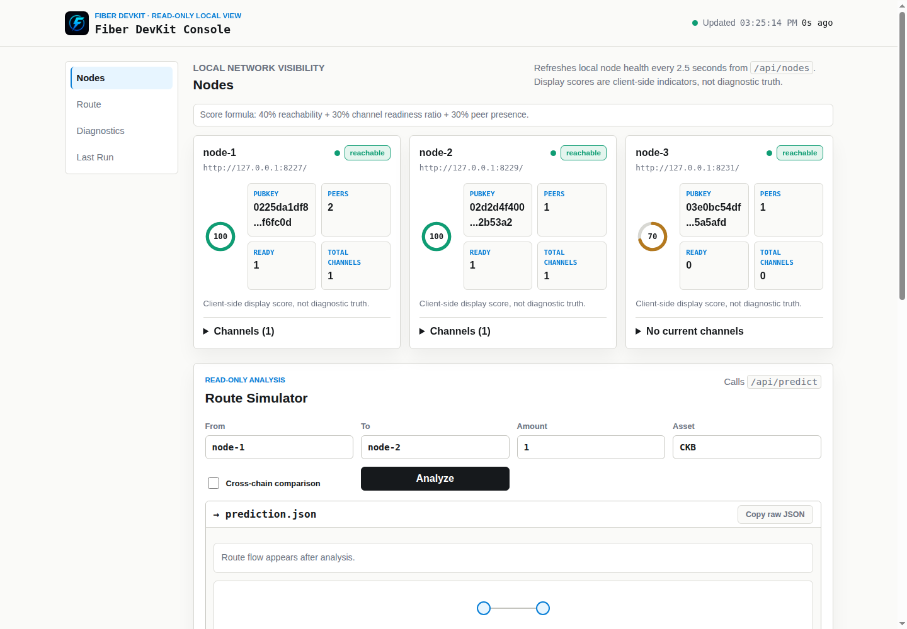
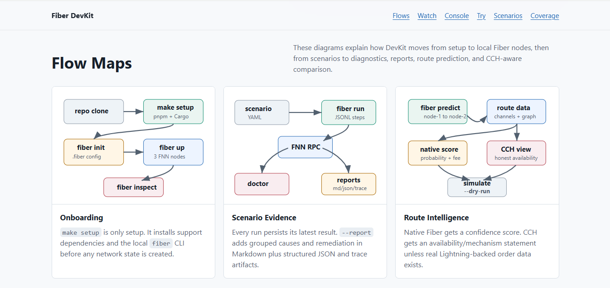
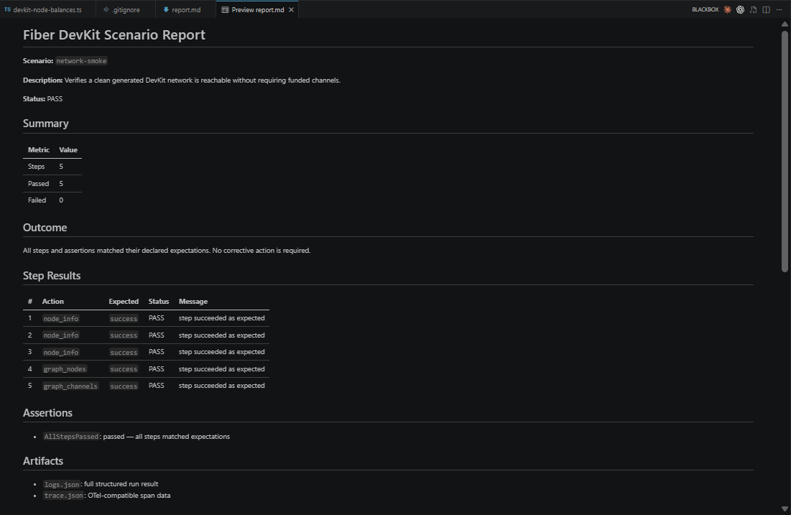
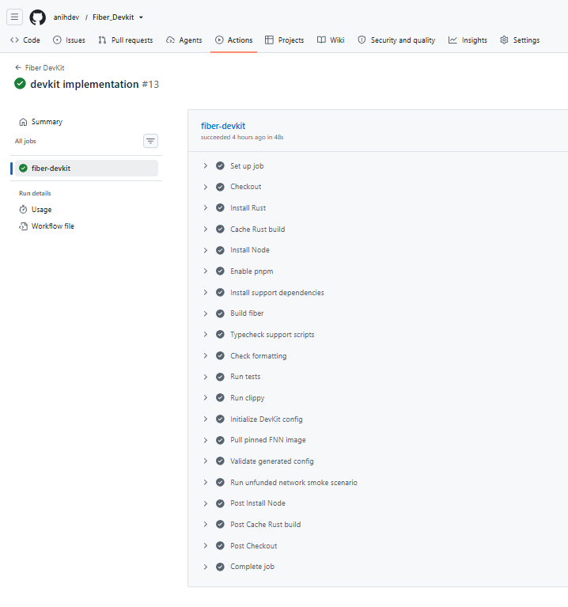
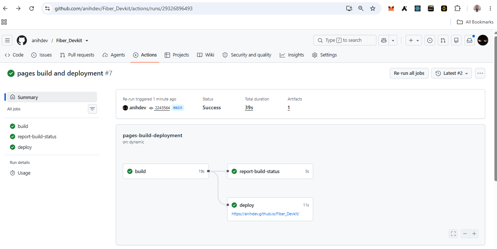

UI & key actions
Fiber DevKit Screenshots
Screenshots of the architecture, live local console, reproducible scenario reporting, successful DevKit CI, complete development lifecycle, and hosted demo deployment.

Complete DevKit Lifecycle
Local Network → Scenarios → Diagnosis → Route Confidence → Reports → CI.

Read-Only DevKit Console
Three reachable FNN nodes, peer counts, ready-channel state, health indicators, and route-analysis controls.

Architecture and Core Flows
Onboarding, scenario execution, FNN RPC interaction, diagnostics, reporting, native route confidence, and honest CCH availability.

Unfunded Network Smoke Report
All configured FNN nodes responded and graph node/channel checks matched their declared expectations.

Fiber DevKit CI
The public workflow built DevKit, ran verification, started the local Fiber network, and completed the unfunded smoke path successfully.

Hosted Demo Deployment
GitHub Pages built and deployed the public demo successfully. This hosting workflow is separate from the Fiber DevKit test CI shown above.